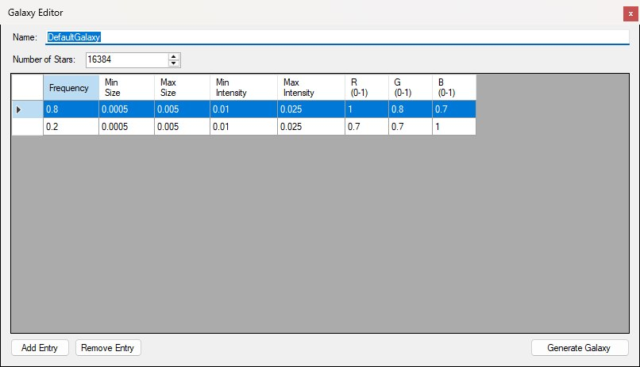
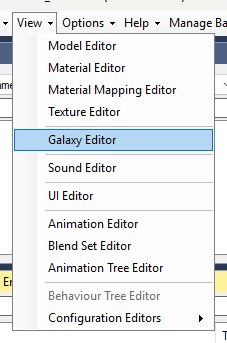
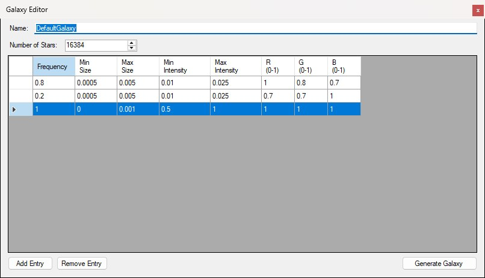
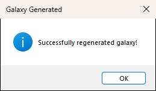

After loading a level, open View → Galaxy Editor to launch the Galaxy Editor, pictured below. It authors the level's skybox starfield: a generation definition plus the star list written under RENDERABLE/GALAXY/.

The Galaxy Editor opened on a retail level — every shipped level carries this same DefaultGalaxy definition.
GALAXY.DEFINITION_BIN — name, star count, and frequency-weighted star templates (authoring; used to regenerate)GALAXY.ITEMS_BIN — generated stars the game reads at runtime (size, intensity, colour, position)There is no 3D star preview or per-star position editor in this window — edit templates, then regenerate.
The Galaxy Editor item sits in the main window's View menu with the other asset editors, as shown below, and is greyed out until a level is loaded.

The View menu with a level loaded: Galaxy Editor sits below the model, material and texture editors and above Sound Editor.
Set the definition Name: and Number of Stars: (maximum 16384). Every retail level ships the same definition, DefaultGalaxy: 16384 stars drawn from two templates, an 80% warm-white class (R 1, G 0.8, B 0.7) and a 20% blue-white class (R 0.7, G 0.7, B 1), both 0.0005–0.005 rad across at intensity 0.01–0.025 — the two rows in the screenshot above. The grid lists the star templates, used as weighted RNG classes when generating:
Use Add Entry / Remove Entry to grow or shrink the template list. Remove Entry deletes the row that holds the selected cell. New rows are appended to the bottom and default to frequency 1, size 0–0.001, intensity 0.5–1, and white colour, as in the figure below.

A freshly added template row (frequency 1, size 0–0.001, intensity 0.5–1, white) selected beneath the two retail rows; Remove Entry would delete it.
Cells are checked as you leave them: a blank, non-numeric or out-of-range value is rejected — the row shows an error icon in its header (hover it for the reason, e.g. Intensity must be between 0 and 1.) and the cell stays in edit until you fix it or press Esc to revert. Accepted edits are applied to the definition the moment you leave the cell.
Click Generate Galaxy to regenerate the in-memory star list from the current definition (unseeded RNG: each star is placed uniformly between −1 and 1 on every axis, picks its template in proportion to the frequencies, and takes a random size and intensity from that template's ranges). The name and star count are applied to the definition at this point. A successful run shows the Galaxy Generated box below, reading Successfully regenerated galaxy!; with zero stars or no templates it still succeeds, but produces an empty star list.

The confirmation after a successful Generate Galaxy run.
Generating does not write to disk by itself — use File → Save Level afterward. There is no import/export of star lists.
The Galaxy Editor has no separate Save button, and Name: / Number of Stars: are only copied into the definition when you click Generate Galaxy — so change them, generate, then save. Persist definition and items with File → Save Level (Ctrl+S), which writes both GALAXY.DEFINITION_BIN and GALAXY.ITEMS_BIN under the level's RENDERABLE/GALAXY/ folder.
Saving closes the game if it's running so install files aren't locked.